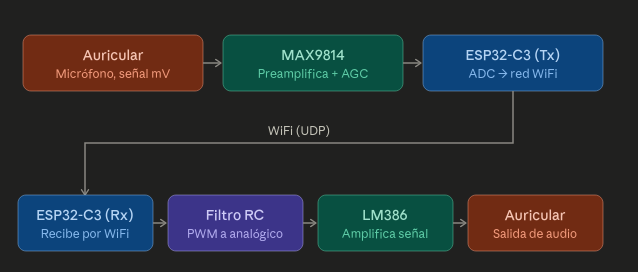
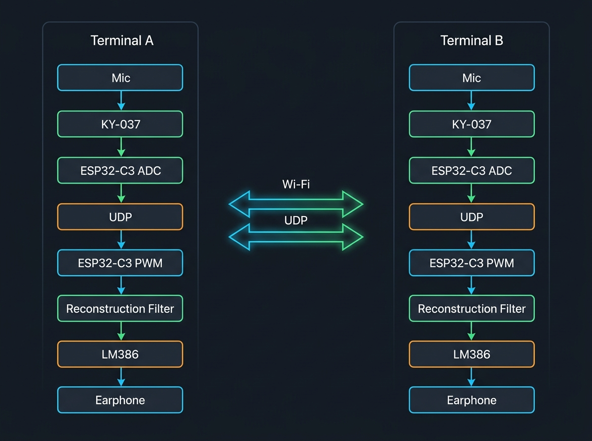
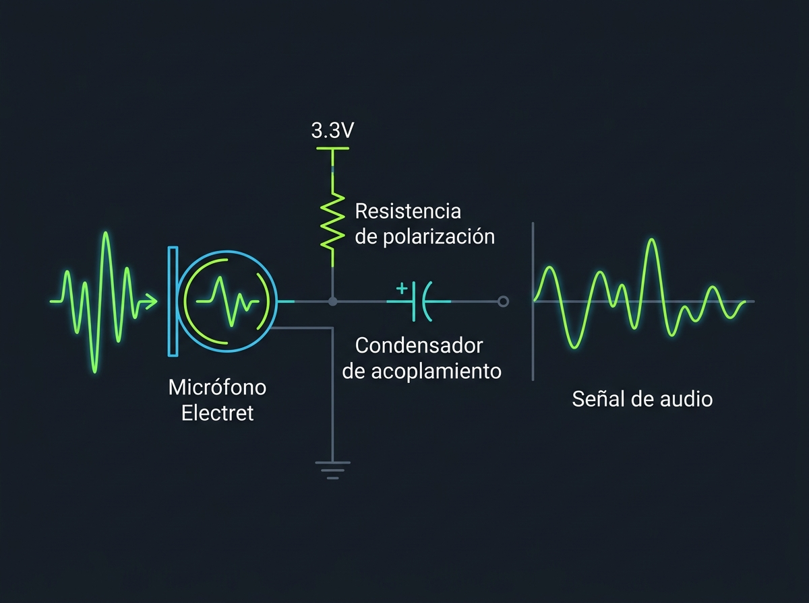
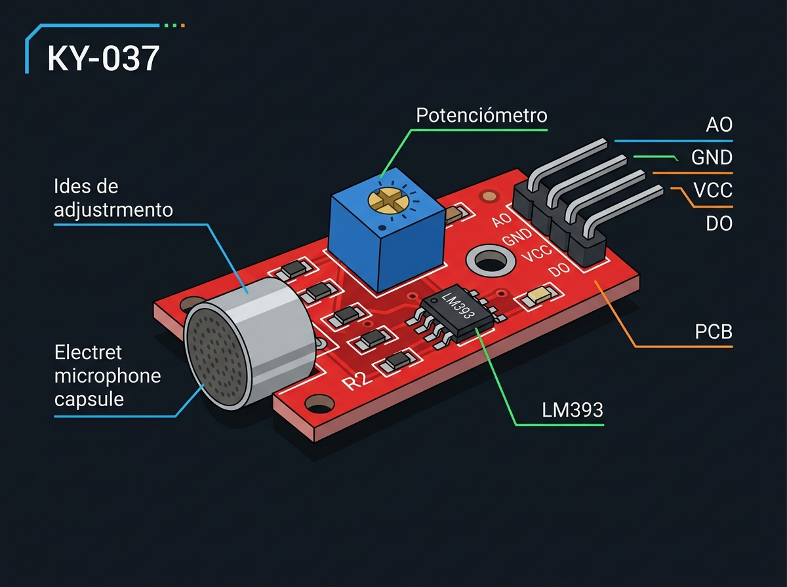
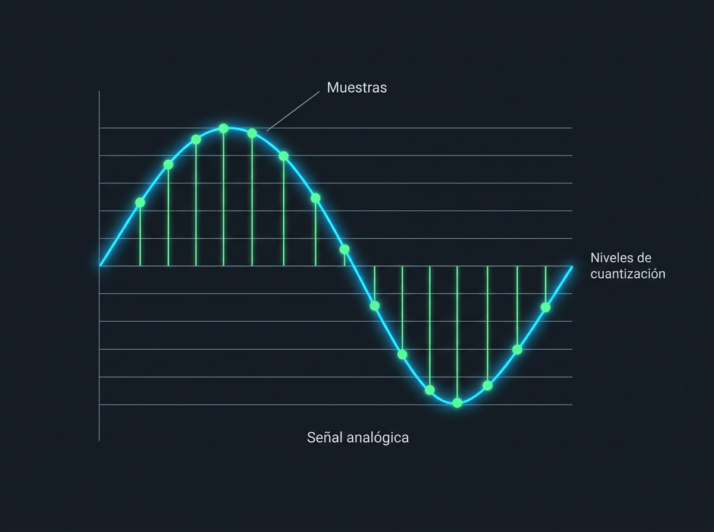
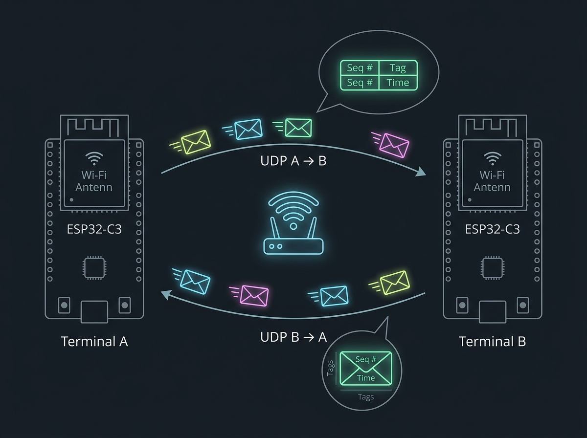
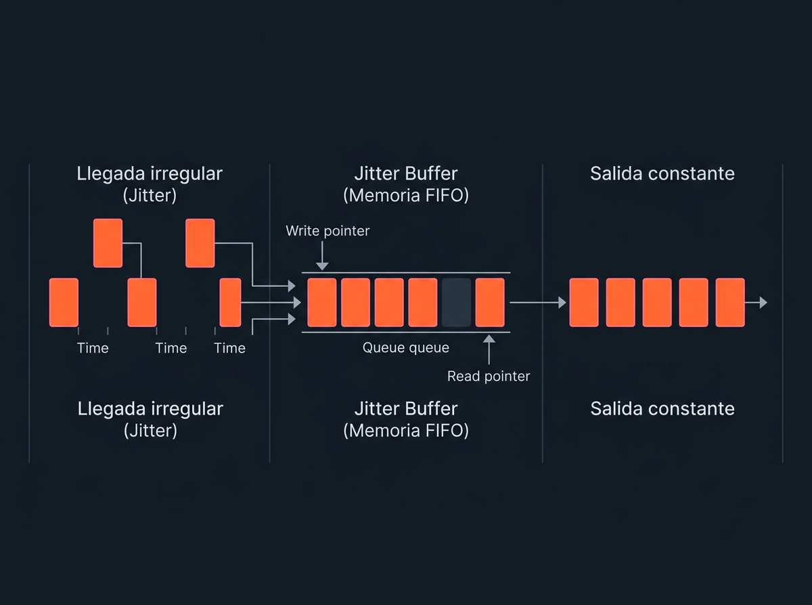
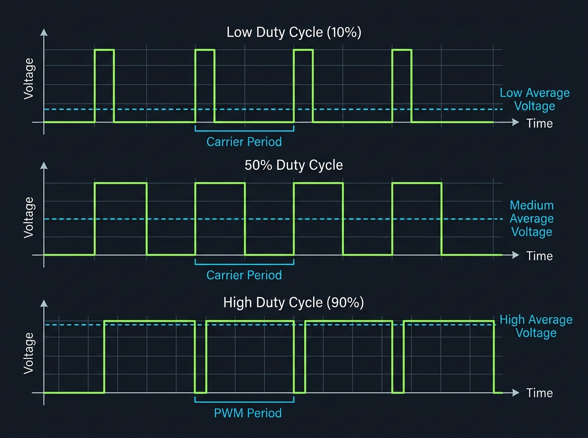
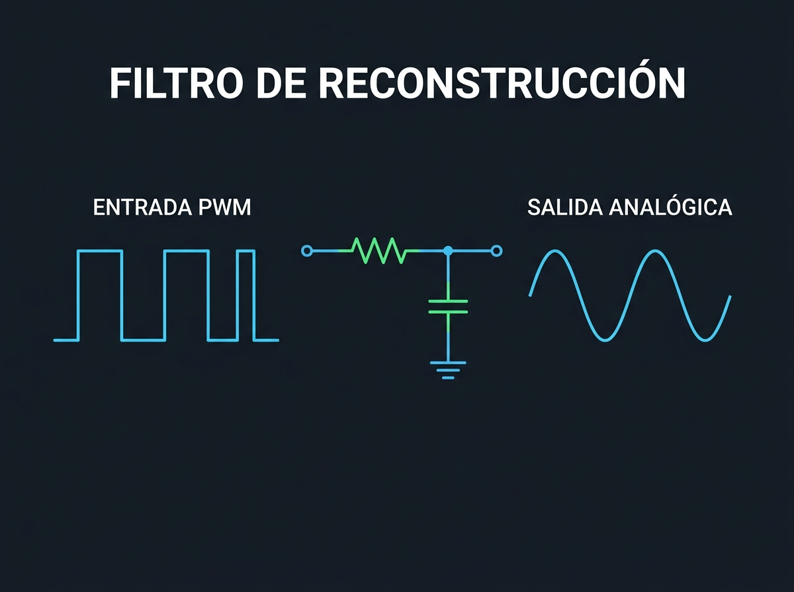
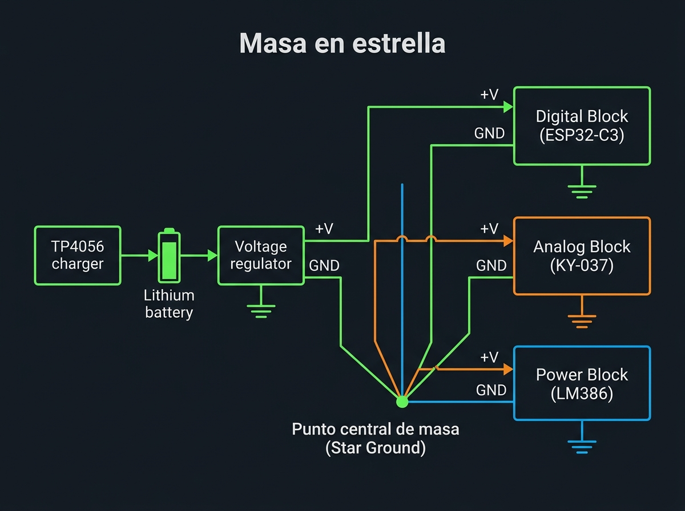

Material de estudio · electrónica y comunicaciones
Intercomunicador Wi‑Fi full duplex con ESP32‑C3
Análisis técnico por bloques funcionales de un sistema de voz bidireccional formado por módulo de micrófono KY-037, conversión ADC, transmisión UDP, reconstrucción PWM, filtro pasabajos y amplificador LM386.

Objetivo general del proyecto
El proyecto consiste en construir dos terminales de intercomunicación capaces de transmitir y recibir voz mediante una red Wi‑Fi. Cada terminal estará compuesto por un auricular, un módulo de micrófono KY-037, un ESP32‑C3, un filtro de reconstrucción y un amplificador LM386.
El sistema debe funcionar en modalidad full duplex. Esto significa que los dos usuarios pueden hablar y escuchar al mismo tiempo, de manera semejante a una llamada telefónica. Cada terminal es transmisor y receptor simultáneamente.
Arquitectura funcional completa
TERMINAL A TERMINAL B
Micrófono A Micrófono B
│ │
▼ ▼
KY-037 A KY-037 B
│ │
▼ ▼
ADC ESP32-C3 A ADC ESP32-C3 B
│ │
▼ ▼
Búfer y paquetes UDP Búfer y paquetes UDP
│ │
├────────────── Wi‑Fi A → B ───────────────────►│
│ │
│◄───────────── Wi‑Fi B → A ────────────────────┤
│ │
▼ ▼
Búfer de recepción A Búfer de recepción B
│ │
▼ ▼
PWM A PWM B
│ │
▼ ▼
Filtro A Filtro B
│ │
▼ ▼
LM386 A LM386 B
│ │
▼ ▼
Auricular A Auricular BUn solo ESP32‑C3 debe realizar permanentemente dos trabajos: capturar y transmitir el micrófono local, y recibir y reproducir el audio remoto.
Ruta local de transmisión
La voz local se convierte en muestras, se organiza en paquetes y se envía hacia el otro terminal.
Ruta local de recepción
Los paquetes remotos se ordenan, se convierten en PWM y se amplifican para el auricular.

Cadena de transmisión
Voz → módulo KY-037 → ADC → muestras → búfer → paquetes UDP → Wi‑Fi
3.1 Micrófono del headset
El micrófono es un transductor electroacústico. Convierte las variaciones de presión producidas por la voz en una pequeña señal eléctrica analógica. La membrana interna se mueve según el sonido y produce una tensión cuya forma representa aproximadamente la forma de onda acústica.
Voz fuerte
Produce una variación eléctrica mayor.
Voz suave
Produce una variación eléctrica menor.
Silencio
Permanece una señal muy pequeña junto con ruido residual.
La salida del micrófono suele ser de pocos milivoltios. Es demasiado pequeña para aprovechar directamente el rango del ADC, por lo que debe amplificarse antes de la conversión.
Micrófono electret
El módulo KY-037 incluye la cápsula de micrófono electret junto con la electrónica necesaria para su polarización y preamplificación básica en la misma placa.
Ventaja del headset
El micrófono permanece cerca de la boca y el auricular cerca del oído. Esto mejora la relación señal‑ruido y reduce la cantidad de sonido reproducido que vuelve a entrar al micrófono.
Posibles problemas
- Polaridad incorrecta de una cápsula electret.
- Cable demasiado largo o sin blindaje.
- Conector TRRS cableado según otra norma.
- Micrófono dinámico conectado a una entrada preparada para electret.
- Captación de señales Wi‑Fi, PWM o ruido de alimentación.
- Micrófono demasiado próximo al auricular.

3.2 Módulo de micrófono KY-037
El KY-037 es un módulo sensor de sonido que incorpora un micrófono electret y un circuito de acondicionamiento básico. A diferencia de un chip especializado como el MAX9814, no cuenta con control automático de ganancia (AGC), sino que utiliza un potenciómetro analógico en placa para calibrar la sensibilidad de la salida analógica y el punto de disparo de la salida digital.
Componentes clave del módulo
Micrófono Electret
Cápsula que capta las variaciones de presión acústica de la voz.
Potenciómetro analógico
Permite ajustar de forma manual la ganancia y calibrar el punto de reposo analógico.
Comparador LM393
Compara el nivel de sonido con un umbral y entrega una salida digital (DO) alta o baja.
Pines de conexión del módulo
| Pin | Descripción | Conexión en el sistema |
|---|---|---|
| AO | Salida Analógica (Analog Output) | Conectada directamente al ADC del ESP32-C3 para capturar el audio. |
| GND | Masa o Tierra | Conectada a la masa general (GND) de la placa. |
| VCC | Alimentación (+3,3 V a +5 V) | Conectada a la línea de alimentación limpia del circuito. |
| DO | Salida Digital (Digital Output) | No se utiliza para la transmisión de voz continua. |
Polarización de la salida analógica
El ADC del ESP32-C3 no puede medir tensiones negativas. El circuito del KY-037 entrega la señal de audio montada sobre un nivel de tensión continua, el cual se puede centrar en el rango del ADC usando el potenciómetro.
Nivel de reposo (sin sonido): 1,65 V Pico de tensión positivo: 2,25 V Pico de tensión negativo: 1,05 V
Filtro antialias
Antes del ADC conviene implementar un filtro pasabajos físico. Con una frecuencia de muestreo de 8 kHz, el límite de Nyquist es 4 kHz. Conviene comenzar a atenuar antes, aproximadamente entre 3 y 3,4 kHz.
KY-037 (AO) → filtro pasabajos → ADC

3.3 Conversor analógico‑digital del ESP32‑C3
El ADC convierte una tensión analógica en números. La señal analógica es continua, pero el microcontrolador la observa en instantes determinados. Cada observación es una muestra.
Señal analógica:
/‾\ /‾\
____/ \____/ \____
Muestras:
• • • • • • •Resolución
Los códigos se extienden desde 0 hasta 4095.
Frecuencia de muestreo
| Muestreo | Aplicación | Límite teórico |
|---|---|---|
| 8 kHz | Voz telefónica básica, menor flujo de datos | 4 kHz |
| 16 kHz | Mayor claridad, especialmente en consonantes | 8 kHz |
Cuantización
El ADC redondea cada tensión al nivel digital más cercano. La diferencia entre el valor real y el nivel asignado produce ruido de cuantización. Una mayor resolución reduce ese error, pero no elimina el ruido analógico.
Consideraciones eléctricas
- Impedancia de la fuente analógica.
- Condensador próximo al pin ADC.
- Calidad de la alimentación de 3,3 V.
- Separación entre señales analógicas y digitales.
- Ruido producido durante la transmisión Wi‑Fi.
- Ruido procedente del USB del computador.
- Recorridos de masa y corrientes de potencia.

3.4 Búfer de adquisición
El ADC genera muestras individuales. La red funciona de manera más eficiente cuando se envían grupos de muestras. El búfer es una zona de memoria temporal donde se almacenan antes de formar un paquete.
ADC → muestra 1
ADC → muestra 2
ADC → muestra 3
...
ADC → muestra 80
│
▼
bloque de memoriaRazones para utilizar un búfer
- Reduce la cantidad de paquetes pequeños.
- Organiza la información.
- Separa temporalmente la captura y la transmisión.
- Permite preparar paquetes de tamaño conocido.
- Ayuda a sostener una frecuencia de muestreo regular.
Tamaño y latencia
80 muestras = 10 ms de audio a 8 kHz 160 muestras = 20 ms de audio a 8 kHz 320 muestras = 40 ms de audio a 8 kHz
Búfer circular
[0][1][2][3][4][5][6][7] ↑ │ └────────────────────┘
Al alcanzar la última posición, el índice vuelve a la primera. Esto permite reutilizar continuamente la misma memoria.
3.5 Preparación y empaquetado de datos
┌───────────────────────────┐ │ Identificador del terminal│ │ Número de secuencia │ │ Marca de tiempo │ │ Cantidad de muestras │ │ Formato de audio │ │ Datos de audio │ └───────────────────────────┘
Número de secuencia
Permite detectar paquetes perdidos, duplicados o fuera de orden.
Recibidos: 101, 102, 104, 105 Falta: 103
Marca de tiempo
Indica cuándo fueron capturadas las muestras y puede utilizarse para reconstruir el ritmo de reproducción y medir la latencia.
Formato de muestra
- Resolución: 8, 12 o 16 bits.
- Con signo o sin signo.
- Orden de bytes.
- Cantidad de canales.
- Frecuencia de muestreo.
Ejemplo de flujo de datos
Comunicación Wi‑Fi mediante UDP
4.1 Función del ESP32‑C3 en la red
El ESP32‑C3 integra conectividad Wi‑Fi de 2,4 GHz y puede centralizar la captura, transmisión, recepción y reproducción del audio.
Mediante un router
ESP32 A ──┐
├── router Wi‑Fi
ESP32 B ──┘Ambos terminales reciben una dirección IP dentro de la misma red.
Un ESP32 como punto de acceso
ESP32 A: punto de acceso ESP32 B: estación
No requiere router, pero un terminal debe crear la red.
4.2 UDP
UDP es un protocolo basado en datagramas. Cada bloque se envía como un mensaje independiente entre una dirección IP y un puerto.
| Ventajas | Limitaciones |
|---|---|
| Baja sobrecarga. | No garantiza entrega. |
| No espera confirmaciones. | No garantiza orden. |
| No retransmite automáticamente audio antiguo. | Puede haber duplicados. |
| Permite controlar tamaño y ritmo. | No impone un tiempo máximo de llegada. |
Por qué no siempre conviene retransmitir
Paquete perdido → reemplazar por silencio o interpolación → continuar con el siguiente paquete
En audio en tiempo real, un fragmento que llega demasiado tarde pierde utilidad. La continuidad suele ser más importante que recuperar todos los datos.
4.3 Flujo full duplex
Flujo 1: Terminal A → Terminal B Flujo 2: Terminal B → Terminal A
Aunque posteriormente se implementen con funciones, tareas, interrupciones o periféricos, son procesos funcionales diferentes y ninguno debería bloquear a los demás.

Cadena de recepción
Wi‑Fi → paquetes UDP → búfer de recepción → muestras → PWM → filtro → LM386 → auricular
5.1 Recepción de paquetes
El ESP32 escucha un puerto UDP y recibe los bloques enviados por el otro terminal.
- Verifica el tamaño.
- Comprueba el formato.
- Revisa el número de secuencia.
- Determina la cantidad de muestras.
- Evalúa si el paquete aún llegó a tiempo.
5.2 Búfer de fluctuación o jitter buffer
La red no entrega todos los paquetes con el mismo retraso. Esta variación se denomina jitter.
Paquete 1: tarda 3 ms Paquete 2: tarda 5 ms Paquete 3: tarda 18 ms Paquete 4: tarda 4 ms
Red irregular → jitter buffer → reproducción regular
Búfer mayor
Mayor estabilidad y tolerancia, pero más latencia.
Búfer menor
Menor latencia, pero más riesgo de interrupciones.
Underflow
El reproductor necesita una muestra, pero el búfer está vacío. Puede generar chasquidos, silencio o repetición.
Overflow
Llegan más datos de los que pueden almacenarse. Puede provocar sobrescritura, saltos y aumento progresivo del retardo.
5.3 Tratamiento de pérdidas
Insertar silencio
Es la estrategia más simple.
Repetir la última muestra
Evita un salto brusco, pero puede producir un nivel artificial.
Repetir el último bloque
Puede ocultar una pérdida breve, aunque genera una pequeña repetición.
Interpolar
Calcula valores intermedios; es más complejo.

Generación PWM
6.1 Qué es PWM
PWM significa modulación por ancho de pulso. El pin cambia entre aproximadamente 0 V y 3,3 V. La frecuencia se mantiene casi constante y cambia el porcentaje del periodo en nivel alto.
Duty bajo: __‾________‾________‾____ Duty medio: __‾‾‾_____‾‾‾_____‾‾‾___ Duty alto: _‾‾‾‾‾‾‾__‾‾‾‾‾‾‾_______
0 % → salida siempre baja 50 % → mitad alta y mitad baja 100 % → salida siempre alta
| Duty | Valor medio con 3,3 V |
|---|---|
| 25 % | 0,825 V |
| 50 % | 1,65 V |
| 75 % | 2,475 V |
6.2 Relación entre muestra y duty
ADC o muestra: 12 bits → 0 a 4095 PWM: 11 bits → 0 a 2047
Muestra pequeña → duty bajo Muestra media → duty cercano a 50 % Muestra grande → duty alto
La señal de audio no es la portadora de 39 kHz. La información está en la variación lenta del duty y del valor medio.
6.3 Frecuencia portadora
Una portadora cercana a 39 kHz queda fuera de la banda audible principal y permite conservar una resolución elevada.

Filtro de reconstrucción
7.1 Función
La salida PWM contiene audio, portadora, armónicos, bandas laterales y transiciones digitales rápidas.
PWM rectangular → filtro pasabajos → tensión analógica
Antes del filtro
Pulsos rectangulares entre 0 y 3,3 V.
Después del filtro
Tensión analógica más suave con audio sobre una componente continua.
7.2 Frecuencia de corte
Para audio muestreado a 8 kHz, una frecuencia de corte aproximada entre 3 y 3,4 kHz es razonable para voz.
| Filtro | Pendiente | Uso |
|---|---|---|
| Primer orden | 20 dB/década | Filtrado simple. |
| Segundo orden | 40 dB/década | Mayor rechazo de portadora. |
7.3 Condensador de acoplamiento
Filtro → condensador de acoplamiento → volumen → LM386
La salida filtrada conserva una continua cercana a 1,65 V. El condensador en serie la bloquea y deja pasar el audio.

Amplificador LM386
8.1 Función
La señal después del filtro puede tener una tensión adecuada, pero no necesariamente puede entregar la corriente requerida por un auricular o parlante. El LM386 es una etapa de potencia de audio mono.
KY-037
Captura el audio, preamplifica y provee salida analógica.
LM386
Entrega corriente y potencia a la carga.
Micrófono → KY-037 (AO) → nivel de señal analógica Filtro → LM386 → potencia para auricular
8.2 Ganancia
Para iniciar conviene dejar los pines 1 y 8 abiertos, con ganancia aproximada de 20. Aumentar la ganancia también amplifica ruido, zumbido y chasquidos.
8.3 Desacoplamiento
100 nF → interferencias rápidas 100 µF → variaciones lentas y demanda de corriente
8.4 Red Zobel
Salida ── 10 Ω ── 47 nF ── GND
La red Zobel ayuda a estabilizar el amplificador. La resistencia y el condensador deben ir en serie.
8.5 Auriculares
El control de volumen es obligatorio para evitar niveles molestos, saturación y riesgo para el oído.
Bloque de alimentación
Batería o fuente
│
├── ESP32‑C3
├── KY-037
├── filtro activo
└── LM3869.1 Importancia
El ESP32 transmite por radio y presenta variaciones rápidas de consumo. Una fuente, cableado o desacoplamiento insuficiente puede introducir ruido y caídas de tensión.
- Alimentación del módulo de micrófono.
- Referencia del ADC.
- Masa común.
- Alimentación del LM386.
- Acoplamiento electromagnético.
- Cable USB del computador.
9.2 Separación funcional
Digital
ESP32‑C3 y radio Wi‑Fi.
Analógica
KY-037, referencia y filtros.
Potencia
LM386 y auricular.
9.3 Masa en estrella
┌── GND ESP32
Punto común GND ──┼── GND KY-037
├── GND filtro
└── GND LM386El retorno del LM386 no debe circular por el mismo tramo que sirve de referencia al ADC o micrófono.
9.4 Desacoplamiento local
ESP32: 100 nF + capacidad de reserva KY-037: 100 nF o desacoplamiento local en su pin VCC LM386: 100 nF + 100 µF
9.5 TP4056
El TP4056 es un cargador para una celda de ion‑litio. No es por sí solo una fuente regulada.
USB 5 V → TP4056 → batería 18650
│
▼
regulador o convertidor
│
▼
circuito
Funcionamiento completo de una conversación
- La voz mueve la membrana del micrófono en el KY-037 A.
- El KY-037 preamplifica la señal de audio analógica internamente.
- El potenciómetro del KY-037 calibra el nivel de reposo de la señal.
- El filtro antialias limita las frecuencias altas.
- El ADC toma muestras a intervalos regulares.
- Las muestras se guardan en memoria.
- El ESP32 forma un paquete UDP.
- El paquete se transmite por Wi‑Fi.
- El ESP32 B recibe el paquete.
- El bloque se coloca en el jitter buffer.
- Las muestras se leen a frecuencia constante.
- Cada muestra modifica el duty del PWM.
- El filtro elimina la portadora PWM.
- El condensador bloquea la componente continua.
- El LM386 aumenta la potencia.
- El auricular B reproduce la voz.
Parámetros principales del sistema
Frecuencia de muestreo
8 kHz → menor volumen de datos 16 kHz → mejor claridad
Resolución
8 bits → 256 niveles 12 bits → 4096 niveles 16 bits → 65 536 niveles
Tamaño de paquete
Pequeño → menor latencia Grande → mayor eficiencia
Jitter buffer
Pequeño → rápido Grande → estable
Ganancia de entrada
Debe aprovechar el ADC sin saturarlo.
Ganancia de salida
Debe entregar volumen sin amplificar demasiado el ruido.
Frecuencia de corte
Debe conservar la voz y reducir frecuencias no deseadas.
Latencia total
Captura + paquete + red + jitter buffer + reproducción
Problemas técnicos esperables
Saturación y clipping
Los picos quedan recortados.
Ruido de alimentación
Zumbidos, silbidos o pulsos.
Aliasing
Frecuencias altas reaparecen dentro de la banda audible.
Pérdida de paquetes
Cortes, chasquidos o silencios.
Jitter
Reproducción irregular.
Underflow
El búfer queda vacío.
Overflow
El búfer recibe más datos de los que admite.
Eco
La voz recibida vuelve a transmitirse.
Acople
Realimentación positiva y pitido sostenido.
Ajuste de ganancia incorrecto
Distorsión o volumen bajo por mala calibración del potenciómetro en el KY-037.
Saturación del LM386
Se supera la capacidad de la etapa de salida.
Verificación por bloques
Prueba del ADC
Aplicar una tensión continua conocida y observar promedio, mínimo, máximo y variación.
Prueba del búfer
Reemplazar el ADC por una muestra digital constante.
Prueba del PWM
Generar duty fijo al 50 %.
Prueba del filtro
Antes del filtro: pulsos PWM Después: tensión continua o audio suave
Prueba del LM386
Inyectar una señal analógica conocida con volumen reducido.
Prueba de red
Enviar números de secuencia sin audio y registrar paquetes enviados, recibidos, perdidos, orden y tiempos.
Prueba extremo a extremo
Transmitir una señal conocida y comparar entrada y salida.
Prueba full duplex
Hablar simultáneamente en ambos terminales y comprobar continuidad, latencia y estabilidad.
Glosario de términos
Preguntas de comprensión
Comprensión directa
- ¿Cuál es la diferencia entre un sistema half duplex y uno full duplex?
- ¿Por qué el diagrama original representa solamente una dirección de comunicación?
- ¿Qué bloques debe contener cada terminal?
- ¿Qué transformación realiza el micrófono?
- ¿Por qué no se conecta normalmente el micrófono directamente al ADC?
- ¿Qué pines y componentes principales tiene el módulo KY-037?
- ¿Cómo se calibra la sensibilidad analógica en el KY-037?
- ¿Para qué sirve el comparador LM393 en el KY-037?
- ¿Qué sucede si la ganancia del KY-037 se ajusta demasiado alta?
- ¿Por qué la señal del ADC necesita polarización?
- ¿Qué representa un valor ADC cercano al punto medio?
- ¿Cuántos niveles representa un ADC de 12 bits?
- ¿Qué es una muestra?
- ¿Qué determina la frecuencia de muestreo?
- ¿Qué frecuencia máxima teórica representa un muestreo de 8 kHz?
- ¿Cuál es la función del filtro antialias?
- ¿Por qué se utiliza un búfer antes de transmitir?
- ¿Qué ventaja proporciona un búfer circular?
- ¿Por qué un paquete grande aumenta la latencia?
- ¿Qué información puede incluir una cabecera de audio?
Comunicación y red
- ¿Qué función cumple el número de secuencia?
- ¿Qué es una marca de tiempo?
- ¿Por qué UDP resulta útil para audio en tiempo real?
- ¿Qué garantías no proporciona UDP?
- ¿Por qué puede ser perjudicial retransmitir un paquete demasiado tarde?
- ¿Qué es el jitter?
- ¿Cómo funciona un jitter buffer?
- ¿Qué diferencia existe entre underflow y overflow?
- ¿Qué estrategia sencilla puede utilizarse al perder un paquete?
- ¿Por qué ambos flujos full duplex deben tratarse por separado?
Reconstrucción y salida
- ¿Qué parámetro del PWM representa el audio?
- ¿Qué tensión media se espera con duty de 50 % y 3,3 V?
- ¿Por qué la frecuencia PWM debe superar la banda de voz?
- ¿Cuál es la función del filtro de reconstrucción?
- ¿Por qué la salida filtrada conserva una continua?
- ¿Qué función cumple el condensador de acoplamiento?
- ¿Cuál es la diferencia entre el KY-037 y el LM386?
- ¿Por qué no conviene usar inicialmente la máxima ganancia del LM386?
- ¿Cuál es la función de la red Zobel?
- ¿Por qué se necesita control de volumen?
Análisis y aplicación
- ¿Qué ocurre si una señal de 7 kHz se muestrea a 8 kHz sin filtro antialias?
- Si un paquete contiene 160 muestras a 8 kHz, ¿cuántos milisegundos representa?
- Si cada muestra ocupa dos bytes, ¿cuántos bytes contiene?
- ¿Qué efecto tiene duplicar la frecuencia de muestreo?
- ¿Qué ventaja y desventaja tiene aumentar el jitter buffer?
- ¿Qué ocurre si el índice de lectura avanza más rápido que el de escritura?
- ¿Por qué el USB del computador puede introducir ruido?
- ¿Por qué el retorno del LM386 no debe circular por la masa del micrófono?
- ¿Cómo determinar si el ruido proviene del ADC o del preamplificador?
- ¿Qué prueba verifica el filtro PWM sin audio?
- ¿Por qué un duty fijo de 50 % debería producir silencio después del acoplamiento?
- ¿Qué puede producir un pitido sostenido entre auricular y micrófono?
- ¿Por qué un headset reduce el acople?
- ¿Qué bloques influyen en la latencia total?
- ¿Por qué una mayor ganancia no implica mejor calidad?
- ¿Qué ocurre si el ADC recibe una tensión superior a su rango?
- ¿Qué datos deberían registrarse para evaluar la red?
- ¿Cómo distinguir pérdida de paquetes de ruido analógico?
- ¿Qué ocurre si los terminales usan frecuencias de muestreo distintas?
- ¿Qué condiciones deben cumplirse para considerar funcional el prototipo?